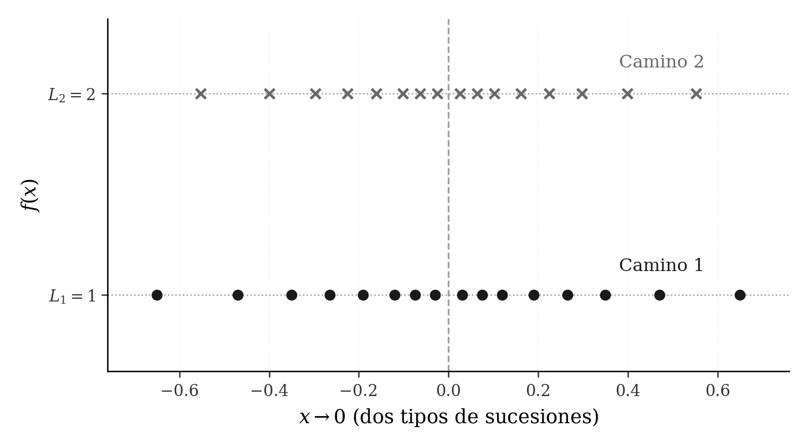
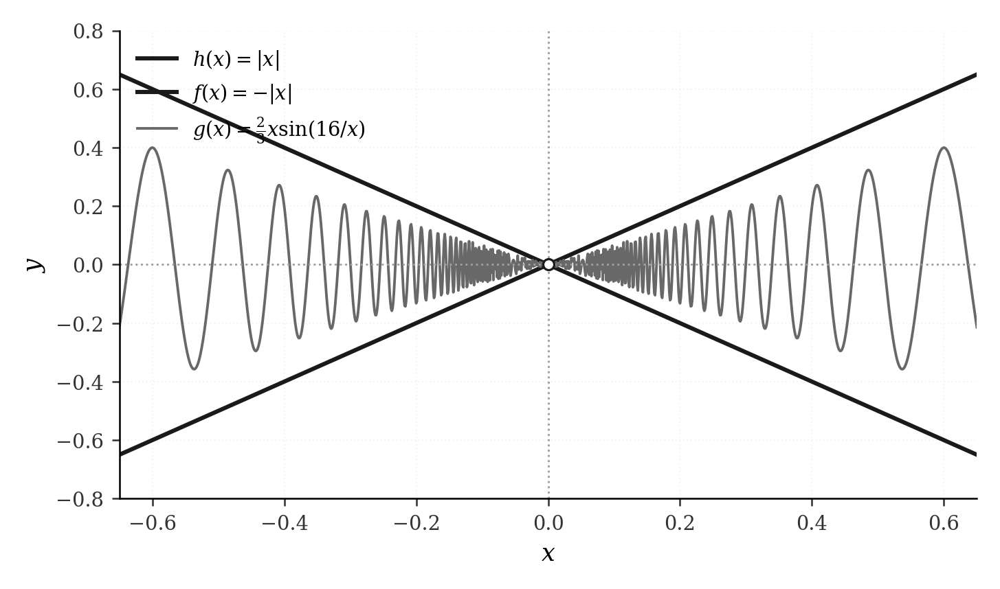
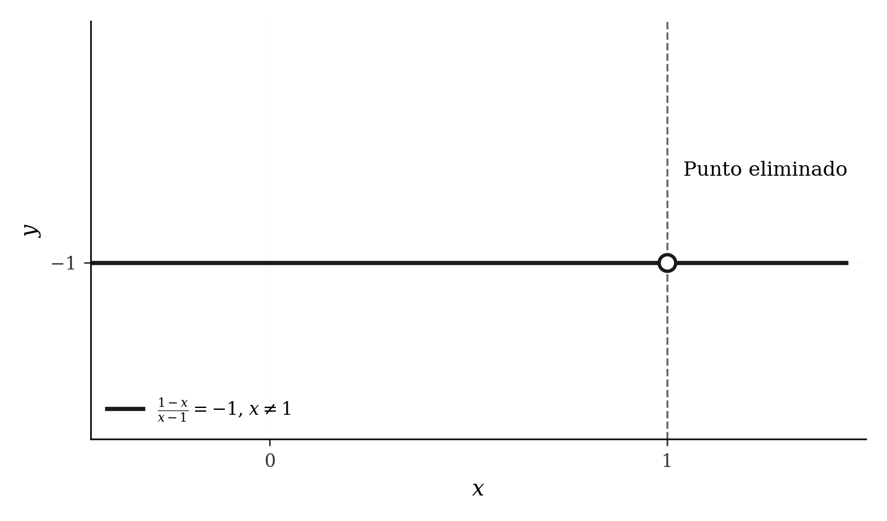
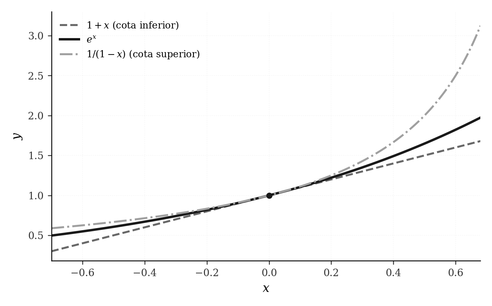
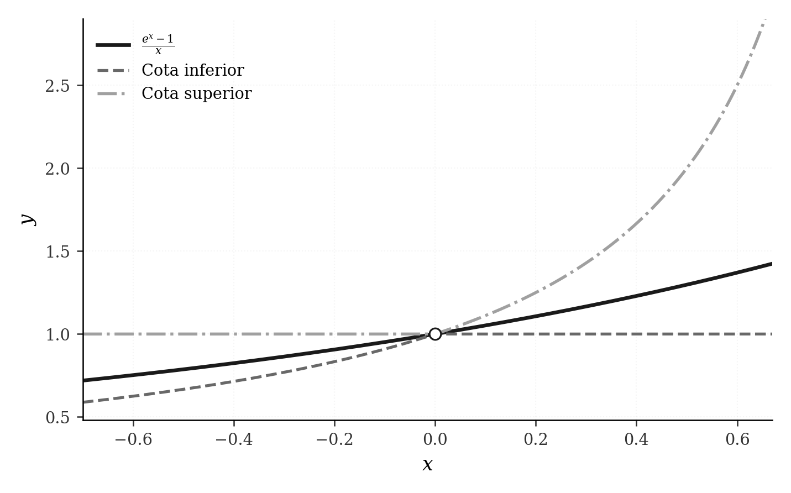
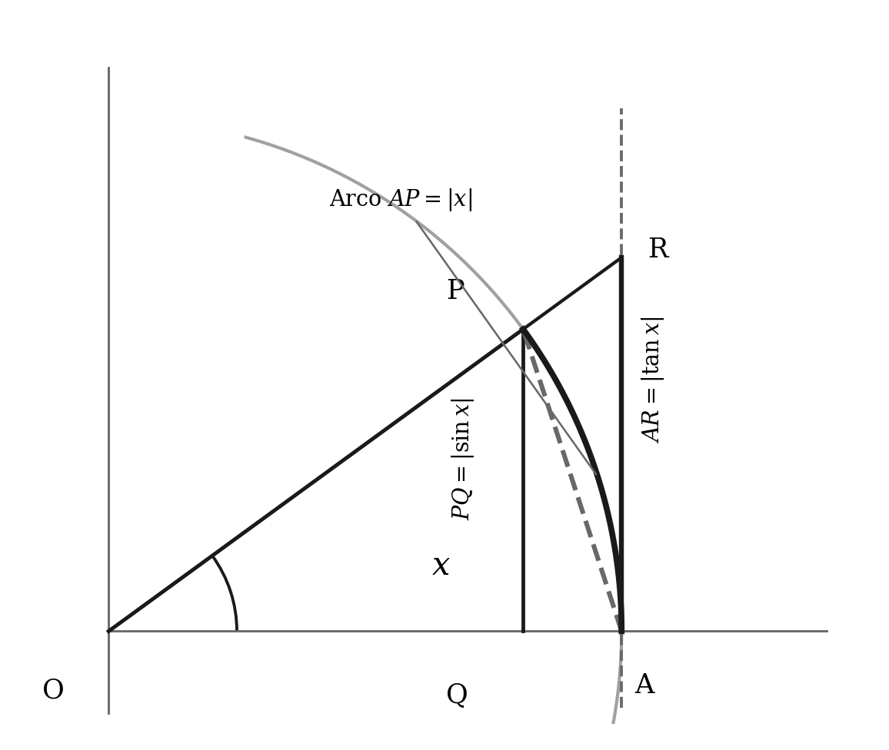
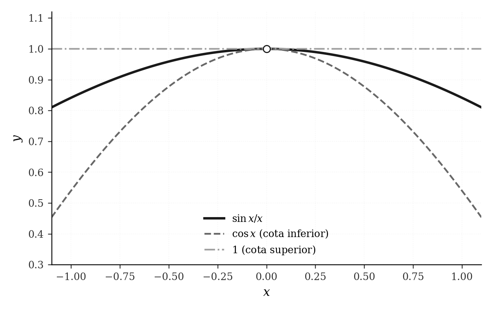
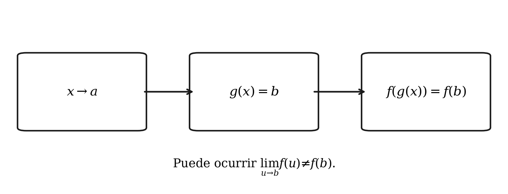

Álgebra, comparación y límites fundamentales
Capítulo 14 · Parte V. Límites de funciones y cálculo diferencial
Los teoremas para límites de funciones heredan su estructura de los teoremas para sucesiones. Las cotas y el teorema del sándwich llevan a los límites fundamentales exponenciales y trigonométricos.
Grabaciones de referencia: grabación de la cátedra 12.2.
Procedencia de este tramo: cátedra 12.2.
La definición secuencial que organiza el curso
En la clase (03:20–06:39). San Martín recuerda que el límite se estudia en un punto de acumulación del dominio, porque el argumento es una aproximación a ese punto por elementos del dominio. La condición crucial es universal: toda sucesión admisible ha de producir el mismo límite de imágenes.
Sea \(A\subseteq\mathbb R\), sea \(f:A\to\mathbb R\) y sea \(a\) un punto de acumulación de \(A\): existe una sucesión \((x_n)\) de elementos de \(A\), con \(x_n\neq a\) para todo \(n\), que converge a \(a\). Para un real \(L\), escribimos
\[ \lim_{x\to a}f(x)=L \]
cuando se cumple la siguiente condición:
\[ \boxed{\quad\forall (x_n)\subseteq A:\quad \bigl[x_n\ne a\ (\forall n),\ x_n\to a\bigr] \ \Longrightarrow\ f(x_n)\to L.\quad} \]
La función transformó una sucesión del dominio en la sucesión de imágenes \((f(x_n))\). Para estudiar el límite, dejamos fijo el punto \(a\) y hacemos variar las sucesiones que lo alcanzan desde \(A\setminus\{a\}\). El valor \(f(a)\) —cuando existe— constituye información puntual; los valores \(f(x_n)\) describen el comportamiento en torno al punto.
Demostración desarrollada. En una función definida en un conjunto perforado, como \(f(x)=(x-1)/(x-1)\) para \(x\ne1\), toda sucesión admisible \(x_n\to1\) verifica \(f(x_n)=1\). En consecuencia, el límite es \(1\), aunque la expresión carezca de valor en \(x=1\). Este razonamiento enlaza directamente con la cátedra 12.1.
Primer teorema: unicidad
En la clase (06:41–12:57). El docente establece que una función puede tener un único límite en un punto de acumulación. La demostración utiliza la unicidad del límite de sucesiones.
Teorema. Si \(a\) es punto de acumulación de \(A\) y
\[ \lim_{x\to a}f(x)=L_1,\qquad \lim_{x\to a}f(x)=L_2, \]
entonces \(L_1=L_2\).
Demostración desarrollada. Por acumulación de \(A\) existe una sucesión admisible \((x_n)\subseteq A\setminus\{a\}\) con \(x_n\to a\). La primera hipótesis implica que \(f(x_n)\to L_1\). La segunda implica que esa misma sucesión \(f(x_n)\to L_2\). La unicidad del límite de sucesiones da \(L_1=L_2\). \(\square\)
La expresión «para toda sucesión» tiene aquí una consecuencia práctica considerable: para mostrar que una función carece de límite en \(a\), basta construir dos sucesiones testigo que se aproximen a \(a\) desde el dominio y cuyas imágenes converjan a números distintos. La presencia de dos caminos con distintos destinos prueba la incompatibilidad con un límite único.

Ampliación editorial — un ejemplo preciso. Sea
\[ f(x)=\begin{cases}1,&x\in\mathbb Q,\\2,&x\in\mathbb R\setminus\mathbb Q.\end{cases} \]
En torno a \(a=0\) se consideran dos sucesiones: \(r_n=1/n\), formada por racionales, y \(s_n=\sqrt2/n\), formada por irracionales. Ambas convergen a cero y cumplen \(r_n,s_n\neq0\). Sus imágenes son constantes, respectivamente, \(f(r_n)=1\) y \(f(s_n)=2\). Por unicidad, \(\lim_{x\to0}f(x)\) no existe. Este es un ejemplo editorial construido para representar el método que San Martín explica mediante gráficos de ramas distintas.
El profesor relaciona esta idea con la función parte entera: en un salto, los acercamientos desde conjuntos del dominio situados a lados distintos del punto pueden determinar valores límite diferentes. Asimismo recuerda que modificar el dominio cambia las sucesiones admisibles y, por consiguiente, puede cambiar la existencia del límite.
Segundo teorema: álgebra de límites
En la clase (13:01–15:40). Las propiedades de suma, diferencia, producto y cociente se trasladan de las sucesiones a las funciones. El método consiste en introducir una sucesión arbitraria \(x_n\to a\), calcular las imágenes de cada función y aplicar el álgebra de los límites de sucesiones.
Sea \(f,g:A\to\mathbb R\), con \(a\) punto de acumulación de \(A\), y supongamos
\[ \lim_{x\to a}f(x)=F,\qquad \lim_{x\to a}g(x)=G. \]
Para constantes \(\alpha,\beta\in\mathbb R\), las reglas son
\[ \begin{aligned} \lim_{x\to a}(\alpha f(x)+\beta g(x))&=\alpha F+\beta G,\\ \lim_{x\to a}f(x)g(x)&=FG,\\ \lim_{x\to a}\frac{f(x)}{g(x)}&=\frac{F}{G}\qquad\text{si }G\ne0. \end{aligned} \]
La tercera expresión se interpreta en el dominio donde \(g(x)\ne0\). Como \(G\ne0\), la condición \(g(x_n)\ne0\) se cumple eventualmente para cualquier sucesión admisible; igualmente, por la definición del límite, existe un entorno perforado donde el denominador tiene signo estable y permanece separado de cero.
Demostración desarrollada (producto). Dada cualquier sucesión admisible \(x_n\to a\), las hipótesis proporcionan \(f(x_n)\to F\) y \(g(x_n)\to G\). Por el teorema del producto de sucesiones, \(f(x_n)g(x_n)\to FG\). Como la elección de \((x_n)\) fue arbitraria, la definición del límite de funciones entrega la conclusión. \(\square\)
Precisión editorial sobre dominios. Cuando \(f:A\to\mathbb R\) y \(g:B\to\mathbb R\) tienen dominios diferentes, sus operaciones se estudian en el dominio común correspondiente. Para el cociente se utiliza \(\{x\in A\cap B:g(x)\ne0\}\); además, el punto \(a\) debe ser de acumulación de dicho dominio. Esta precisión evita inferencias basadas en expresiones sin evaluación definida.
Tercer teorema: sándwich en un entorno perforado
En la clase (15:55–22:20). El profesor recupera el teorema del sándwich, enfatizando el cambio entre límites de sucesiones y límites de funciones: ahora las desigualdades se piden cerca del punto de aproximación, sobre el dominio que corresponde, con el propio punto excluido cuando sea necesario.
Teorema (sándwich). Supongamos que \(g:A\to\mathbb R\) y que \(a\) es punto de acumulación de \(A\). Sean \(f\) y \(h\) funciones definidas al menos sobre los puntos de \(A\) suficientemente próximos a \(a\). Si existe \(\delta>0\) tal que
\[ f(x)\le g(x)\le h(x) \quad\text{para }x\in A,\quad 0<|x-a|<\delta, \]
y si \(f\) y \(h\), consideradas sobre ese mismo dominio de aproximación, satisfacen
\[ \lim_{x\to a}f(x)=\lim_{x\to a}h(x)=L, \]
entonces \(\lim_{x\to a}g(x)=L\).
Demostración desarrollada — aportación editorial a partir de la indicación del docente. Elegimos una sucesión arbitraria \(x_n\in A\setminus\{a\}\) con \(x_n\to a\). Por convergencia existe \(N\) tal que \(0<|x_n-a|<\delta\) para \(n\ge N\). Por tanto,
\[ f(x_n)\le g(x_n)\le h(x_n)\qquad(n\ge N). \]
Los extremos convergen a \(L\) por la definición secuencial del límite de funciones. El teorema del sándwich para sucesiones implica \(g(x_n)\to L\). Como \((x_n)\) era arbitraria, queda probado el límite de \(g\). \(\square\)

El esquema muestra un piso \(f\) y un techo \(h\) que convergen a una altura común. La trayectoria intermedia puede oscilar y el valor exacto en \(a\) es ajeno a la condición. El teorema extrae un comportamiento límite del orden de las tres funciones.
Primeras aplicaciones: identidad, polinomios y racionales
En la clase (22:41–31:55). Como \(\lim_{x\to a}x=a\) y \(\lim_{x\to a}c=c\) para toda constante \(c\), el álgebra de límites demuestra por inducción que
\[ \lim_{x\to a}x^k=a^k,\qquad k\in\mathbb N_0. \]
Para un polinomio \(P(x)=\sum_{k=0}^{m}c_kx^k\), resulta
\[ \boxed{\lim_{x\to a}P(x)=P(a).} \]
Esta coincidencia entre el límite y el valor puntual es una propiedad de los polinomios que el docente subraya como caso especialmente sencillo.
Si \(P\) y \(Q\) son polinomios y \(Q(a)\ne0\), el cociente \(R(x)=P(x)/Q(x)\) satisface
\[ \boxed{\lim_{x\to a}\frac{P(x)}{Q(x)}=\frac{P(a)}{Q(a)}.} \]
Cuando \(Q(a)=0\), el álgebra del cociente requiere examinar la función. Se pueden presentar situaciones diferentes:
En la clase — hueco algebraico (27:13). La función
\[ R(x)=\frac{1-x}{x-1},\qquad x\in\mathbb R\setminus\{1\}, \]
vale \(-1\) para cada punto de su dominio. El gráfico es una recta horizontal con un punto excluido, y \(\lim_{x\to1}R(x)=-1\).

En la clase — comportamiento no acotado (28:15–31:48). Si \(Q(a)=0\) y \(P(a)\ne0\), cerca de \(a\) el cociente \(P(x)/Q(x)\) tiene magnitud arbitrariamente grande en los puntos donde está definido. Para justificarlo, se puede invertir el cociente:
\[ \lim_{x\to a}\frac{Q(x)}{P(x)}=\frac{Q(a)}{P(a)}=0. \]
A lo largo de cualquier sucesión \(x_n\to a\) donde \(Q(x_n)\ne0\), el recíproco \(P(x_n)/Q(x_n)\) es no acotado en valor absoluto. Más precisamente, para un \(M>0\) se puede escoger \(\delta\) de modo que, al cumplir \(0<|x-a|<\delta\) y \(Q(x)\ne0\), se obtenga \(|Q(x)/P(x)|<1/M\); entonces \(|P(x)/Q(x)|>M\). En el caso de polinomios, \(a\) es un cero aislado de \(Q\) cuando \(Q\) es un polinomio distinto del nulo, y este comportamiento corresponde a una asíntota vertical.
Precisión editorial. El dato \(Q(a)=0\) por sí solo señala un lugar donde analizar la expresión; la prueba del comportamiento no acotado utiliza además \(P(a)\ne0\). El ejemplo con numerador y denominador nulos muestra por qué interesa distinguir ambos casos antes de simplificar o anunciar una asíntota.
La exponencial: desigualdades que generan límites
En la clase (32:00–39:57). La exponencial fue construida en la semana anterior mediante límites de sucesiones. Para recuperar su comportamiento cerca de cero, San Martín utiliza dos desigualdades válidas simultáneamente cuando \(x<1\):
\[ \boxed{\qquad 1+x\le e^x\le\frac{1}{1-x},\qquad x<1.\qquad} \]
La primera es la desigualdad fundamental de la exponencial: \(e^x\ge1+x\) para todo \(x\in\mathbb R\). La segunda resulta de aplicar la primera a \(-x\):
\[ e^{-x}\ge1-x \quad\Longleftrightarrow\quad \frac1{e^x}\ge1-x. \]
Como \(e^x>0\), multiplicar por \(e^x\) conserva el orden. Para \(x<1\), el factor \(1-x\) es positivo y se puede dividir, obteniendo \(e^x\le1/(1-x)\). Esta restricción de dominio es decisiva al usar la cota superior.

Teorema. \(\displaystyle\lim_{x\to0}e^x=1\).
Demostración desarrollada. Existe un entorno perforado de cero contenido en \((-\infty,1)\). En él,
\[ 1+x\le e^x\le\frac1{1-x}. \]
Por el álgebra de límites, \(\lim_{x\to0}(1+x)=1\) y \(\lim_{x\to0}1/(1-x)=1\). Por el teorema del sándwich, la función intermedia converge a \(1\). \(\square\)
El límite fundamental de primer orden
En la clase (40:00–55:44). La expresión \(e^x-1\) converge a cero cuando \(x\to0\). San Martín pregunta entonces por su escala de aproximación: cuánto vale el cociente de esa cantidad con \(x\), que también converge a cero. El teorema del cociente del álgebra de límites requiere un denominador con límite distinto de cero y, por ello, aquí interesa construir otro sándwich.
Teorema.
\[ \boxed{\lim_{x\to0}\frac{e^x-1}{x}=1.} \]
Demostración desarrollada. Restamos uno a la desigualdad de la sección anterior:
\[ x\le e^x-1\le\frac{x}{1-x}\qquad(x<1). \]
Si \(0<x<1\), podemos dividir por \(x\) conservando el sentido de las desigualdades:
\[ 1\le\frac{e^x-1}{x}\le\frac1{1-x}. \]
Si \(x<0\), al dividir por \(x\) se invierten las dos desigualdades:
\[ \frac1{1-x}\le\frac{e^x-1}{x}\le1. \]
Las dos situaciones se reúnen mediante el mínimo y el máximo de las cotas:
\[ \boxed{ \min\!\left\{1,\frac1{1-x}\right\} \le\frac{e^x-1}{x}\le \max\!\left\{1,\frac1{1-x}\right\} \quad(0<|x|<1).} \]
Cuando \(x\to0\), tanto la constante \(1\) como la fracción \(1/(1-x)\) convergen a \(1\). Sus mínimos y máximos convergen también a \(1\) (por ejemplo, porque \(\min(u,v)=\tfrac12(u+v-|u-v|)\) y \(\max(u,v)=\tfrac12(u+v+|u-v|)\)). Por sándwich, el cociente converge a \(1\). \(\square\)

Sentido conceptual — ampliación editorial. La igualdad anterior expresa que, cuando \(x\) se acerca a cero, la diferencia \(e^x-1\) y la propia variable \(x\) tienen el mismo comportamiento de primer orden:
\[ e^x-1=x\,q(x),\qquad \lim_{x\to0}q(x)=1. \]
En un curso posterior este límite será el fundamento de la derivada de la exponencial en el origen. En la presente clase surge mediante un teorema de orden y dos desigualdades elementales.
Ejercicio propuesto en la clase (55:45). Calcular \(\lim_{x\to1}\ln x\) a partir de las cotas del logaritmo. La demostración editorial aparece en el apartado de práctica.
Trigonometría: de la geometría de un arco a los límites fundamentales
En la clase (1:02:17–1:25:12). El profesor construye un esquema del círculo unitario, fijando un ángulo \(x\) expresado en radianes, con \(-\pi/2<x<\pi/2\). Compara cuatro objetos geométricos: la altura \(|\sin x|\), la cuerda desde \((1,0)\) hasta \((\cos x,\sin x)\), el arco de longitud \(|x|\) y el segmento tangente de longitud \(|\tan x|\).

En notación de la exposición, \(A=(1,0)\), \(P=(\cos x,\sin x)\), \(Q=(\cos x,0)\) y \(R=(1,\tan x)\). El segmento \(PQ\) mide \(|\sin x|\), y la cuerda \(AP\) mide
\[ |AP|=\sqrt{(1-\cos x)^2+\sin^2x} =\sqrt{2(1-\cos x)}. \]
La comparación de un cateto con la hipotenusa proporciona
\[ |\sin x|\le\sqrt{2(1-\cos x)}. \]
El argumento geométrico de la clase conduce después a
\[ \boxed{ |\sin x|\le\sqrt{2(1-\cos x)}\le|x|\le|\tan x|, \qquad |x|<\frac\pi2.} \tag{G} \]
Alcance de la demostración en la clase. El docente justifica intuitivamente que la cuerda es más corta que el arco correspondiente y que el arco es más corto que el trayecto tangente: emplea una imagen de un elástico que, al tensarse desde el arco hasta el punto exterior, aumenta su longitud. Advierte explícitamente que este último paso queda fundamentado geométricamente, y que la reconstrucción completa desde axiomas y definiciones analíticas de la trigonometría corresponde a un curso posterior. Por fidelidad documental, aquí tomamos (G) como lema geométrico de partida, distinguido de los pasos algebraicos rigurosamente desarrollados a continuación. Una demostración formal de (G) necesita precisar la definición del arco y justificar las comparaciones de longitud sin circularidad.
Primeros límites: seno y coseno
Del lado izquierdo de (G) y de la cota \(\sqrt{2(1-\cos x)}\le|x|\) se deduce
\[ -|x|\le\sin x\le|x|. \]
El sándwich entrega
\[ \boxed{\lim_{x\to0}\sin x=0.} \]
Para el coseno, la cuerda proporciona \(0\le2(1-\cos x)\le x^2\). Así,
\[ 0\le1-\cos x\le\frac{x^2}{2}, \]
y por sándwich \(1-\cos x\to0\) cuando \(x\to0\). En consecuencia,
\[ \boxed{\lim_{x\to0}\cos x=1.} \]
La construcción respeta la secuencia de la clase: los límites más sencillos permiten abordar el cociente fundamental de orden uno.
El límite del seno dividido por su argumento
En la clase (1:20:36–1:23:41). Para \(0<|x|<\pi/2\), el cociente \(\sin x/x\) es positivo: el seno y el ángulo comparten signo. De \(|\sin x|\le|x|\) se obtiene \(\sin x/x\le1\). A su vez, de \(|x|\le|\tan x|=|\sin x|/\cos x\), con \(\cos x>0\), se deduce
\[ \cos x\le\frac{\sin x}{x}. \]
Por tanto,
\[ \boxed{\cos x\le\frac{\sin x}{x}\le1, \qquad 0<|x|<\frac\pi2.} \]
Ambas cotas convergen a \(1\), porque el límite del coseno en cero fue establecido antes. El sándwich demuestra
\[ \boxed{\lim_{x\to0}\frac{\sin x}{x}=1.} \]

La hipótesis de ángulos en radianes es constitutiva de este límite. La definición de radián identifica la medida del ángulo con la longitud del arco de circunferencia de radio uno, propiedad utilizada en (G).
El límite del coseno: segundo orden
En la clase (1:23:43–1:25:12). Las desigualdades obtenidas con cuerda e hipotenusa son
\[ \sin^2x\le2(1-\cos x)\le x^2. \]
Para \(x\ne0\) podemos dividir por \(2x^2>0\):
\[ \frac12\left(\frac{\sin x}{x}\right)^2 \le\frac{1-\cos x}{x^2}\le\frac12. \]
Los extremos convergen a \(1/2\) porque \(\sin x/x\to1\). El teorema del sándwich concluye
\[ \boxed{\lim_{x\to0}\frac{1-\cos x}{x^2}=\frac12.} \]
Ampliación editorial — comprobación algebraica alternativa una vez conocido el límite seno/x. La identidad \(1-\cos x=\sin^2x/(1+\cos x)\), válida para \(x\) próximo a cero, permite escribir
\[ \frac{1-\cos x}{x^2} =\frac{1}{1+\cos x}\left(\frac{\sin x}{x}\right)^2 \longrightarrow\frac12\cdot1^2=\frac12. \]
Esta segunda vía confirma el resultado, aunque hereda el presupuesto geométrico previamente usado para demostrar \(\sin x/x\to1\).
Límite de una composición: teorema anunciado y tarea
En la clase (1:25:47–1:31:42). El último resultado se presenta como preparación para la clase siguiente. Dado que \(g(x)\) se aproxima a cierto \(b\) cuando \(x\to a\), es natural esperar que \(f(g(x))\) se aproxime al límite de \(f(u)\) cuando \(u\to b\). El profesor detiene el argumento en una condición decisiva: la aproximación interior debe realizarse por valores distintos de \(b\) para aprovechar un límite que estudia el comportamiento de \(f\) alrededor de \(b\).
Teorema (enunciado suficiente, explicitado editorialmente). Sean \(g:D\to B\) y \(f:B\to\mathbb R\), y sea \(a\) punto de acumulación de \(D\). Supongamos que \(g(x)\to b\) cuando \(x\to a\), que \(b\) es punto de acumulación de \(B\), que \(f(u)\to L\) cuando \(u\to b\), y que existe \(\delta>0\) tal que
\[ x\in D,\quad0<|x-a|<\delta \quad\Longrightarrow\quad g(x)\ne b. \]
Entonces
\[ \boxed{\lim_{x\to a}f(g(x))=L.} \]
Demostración editorial del ejercicio propuesto. Elíjase una sucesión arbitraria \(x_n\in D\setminus\{a\}\) con \(x_n\to a\). Como \(g(x)\to b\), tenemos \(g(x_n)\to b\). Por la condición adicional, existe \(N\) tal que \(g(x_n)\ne b\) para \(n\ge N\); además, \(g(x_n)\in B\) por el tipo de \(g\). La sucesión de argumentos \(u_n=g(x_n)\), considerada desde \(N\), es por tanto admisible en la definición del límite de \(f\) en \(b\). Esto obliga a \(f(u_n)\to L\), es decir, \(f(g(x_n))\to L\). Como la sucesión original era arbitraria, queda demostrado el límite de la composición. \(\square\)
Contraejemplo editorial: por qué se requiere una condición adicional. Definamos
\[ f(u)=\begin{cases}1,&u=0,\\0,&u\ne0,\end{cases} \qquad g(x)=0\ \text{para todo }x. \]
Entonces \(\lim_{u\to0}f(u)=0\) y \(\lim_{x\to0}g(x)=0\), pero \(f(g(x))=f(0)=1\) para todo \(x\), así que \(\lim_{x\to0}f(g(x))=1\). El ejemplo muestra que un argumento interior puede permanecer en \(b\) mientras el límite exterior depende exclusivamente de los valores de \(f\) en otros puntos próximos a \(b\).

Ampliación editorial. Una segunda versión útil del teorema exige que \(f\) sea continua en \(b\), es decir, que su límite en \(b\) coincida con \(f(b)\); en ese caso, se permite que \(g(x)=b\) en algunos puntos de aproximación, porque todas las imágenes continúan acercándose a \(f(b)\). Esta formulación se desarrollará naturalmente en el estudio posterior de la continuidad.
Ejercicio propuesto en la clase. Verificar las hipótesis del teorema de composición tomando cualquier sucesión \(x_n\to a\) del dominio de \(f\circ g\). La solución que figura arriba es una ampliación editorial, siguiendo la estrategia que San Martín plantea oralmente.
Taller de problemas y soluciones
Los ejercicios se presentan a continuación según la fuente de origen; las ampliaciones editoriales de cada apuntes permanecen expresamente identificadas.
Ejercicios de consolidación — ampliación editorial — cátedra 12.2
Los ejercicios siguientes son originales de esta edición. Recuperan las técnicas efectivamente desarrolladas, con énfasis en hipótesis, dominios y pruebas. Los problemas señalados como propuestos en la clase se distinguen en los enunciados.
Ejercicio E1 — Dos caminos, dos límites. Sea \(f(x)=0\) si \(x<0\) y \(f(x)=1\) si \(x\ge0\), con dominio \(\mathbb R\). Investigue la existencia de \(\lim_{x\to0}f(x)\) por sucesiones.
Solución. Las sucesiones \(x_n=-1/n\) y \(y_n=1/n\) convergen a cero, son distintas de cero y pertenecen al dominio. Sus imágenes son \(f(x_n)=0\) y \(f(y_n)=1\). Como sus límites difieren, el límite de \(f\) en cero no existe.
Ejercicio E2 — Dominio y hueco. Calcule \(\lim_{x\to3}(x^2-9)/(x-3)\) y explique por qué se puede simplificar la expresión al estudiar el límite.
Solución. La función está definida para \(x\ne3\). Allí \((x^2-9)/(x-3)=x+3\), así que para toda sucesión admisible \(x_n\to3\) la imagen converge a \(3+3=6\). El resultado es \(6\).
Ejercicio E3 — Asíntota y cota. Estudie la magnitud de \(R(x)=(2x+1)/(x-2)\) cuando \(x\to2\) y compárela con la función \((x-2)^2/(x-2)\) en el mismo punto.
Solución. Para la primera, el numerador converge a \(5\) y el denominador a cero; la función tiene magnitud no acotada cerca de \(2\) y una asíntota vertical. La segunda, definida para \(x\ne2\), coincide allí con \(x-2\) y tiene límite \(0\).
Ejercicio E4 — Sándwich con oscilación. Demuestre \(\lim_{x\to0}x\sin(1/x)=0\) con el dominio \(\mathbb R\setminus\{0\}\).
Solución. Como \(|\sin t|\le1\), se verifica \(-|x|\le x\sin(1/x)\le|x|\) para cada \(x\ne0\). Los extremos convergen a cero, y el sándwich entrega el resultado.
Ejercicio E5 — Escala exponencial. Para un real \(c\), calcule \(\lim_{x\to0}(e^{cx}-1)/x\).
Solución. Para \(c=0\) el cociente es idénticamente cero. Para \(c\ne0\), con \(u=cx\) se tiene \((e^{cx}-1)/x=c(e^u-1)/u\). Como \(u\to0\) y el cociente fundamental converge a \(1\), el límite es \(c\).
Ejercicio E6 — Cambio de variable trigonométrico. Para \(c\ne0\), calcule \(\lim_{x\to0}\sin(cx)/x\).
Solución. Es \(c\,\sin(cx)/(cx)\to c\). La igualdad se fundamenta en el límite fundamental del seno con el ángulo \(cx\) medido en radianes.
Ejercicio E7 — Segundo orden trigonométrico. Para \(c\in\mathbb R\), calcule \(\lim_{x\to0}(1-\cos(cx))/x^2\).
Solución. Si \(c=0\), el cociente vale cero. Si \(c\ne0\), escribiendo \(u=cx\) obtenemos \(c^2(1-\cos u)/u^2\to c^2/2\).
Ejercicio E8 — Logaritmo en uno (propuesto en la clase, 55:45; solución editorial). Demuestre \(\lim_{x\to1}\ln x=0\) utilizando desigualdades.
Solución. Para todo \(x>0\) vale \(1-1/x\le\ln x\le x-1\), resultado deducido de \(e^t\ge1+t\) al poner \(t=\ln x\) y repetir para \(1/x\). Al tender \(x\to1\), ambos extremos tienden a cero; el sándwich demuestra \(\ln x\to0\).
Ejercicio E9 — Composición problemática. Sean \(f(u)=2\) cuando \(u=0\) y \(f(u)=0\) cuando \(u\ne0\); sea \(g(x)=x\sin(1/x)\) para \(x\ne0\). Investigue si se puede aplicar directamente el teorema de composición de la sección 8 para calcular \(\lim_{x\to0}f(g(x))\).
Solución. Tenemos \(g(x)\to0\), y \(\lim_{u\to0}f(u)=0\), pero \(g(x)\) toma exactamente el valor cero para infinitos \(x\to0\) (por ejemplo \(x=1/(k\pi)\)) y también toma valores distintos de cero para otros \(x\to0\). Por los primeros puntos, \(f(g(x))=2\); por los segundos, \(f(g(x))=0\). Por tanto, el límite de la composición no existe. Esta situación también confirma la pertinencia de la condición adicional del teorema.
Ejercicio E10 — Comparación de límites. Considere \(f(x)=(e^{2x}-1)/(2x)\) para \(x\ne0\) y defina \(f(0)=7\). Calcule \(\lim_{x\to0}f(x)\).
Solución. Con \(u=2x\), \(f(x)=(e^u-1)/u\to1\). El valor puntual \(7\) define \(f(0)\), mientras que el límite es \(1\).
Ejercicio E11 — Demostrar el teorema de composición (propuesto en la clase, 1:30:53; solución editorial). Con las hipótesis de la sección 8, desarrolle la prueba mediante sucesiones.
Solución. Véase la demostración editorial de la sección 8. El paso técnico consiste en observar que la composición \(f(g(x_n))\) está definida sobre el dominio \(D\) y que, eventualmente, \(g(x_n)\in B\setminus\{b\}\). La condición universal del límite de \(f\) se aplica entonces a los argumentos interiores.
Este capítulo pertenece a la edición temática no oficial del curso IC2021. Índice del libro · Fuentes y concordancia.